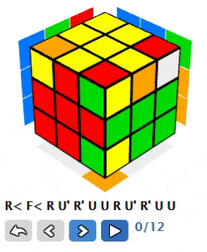

3x3x3 Rubik’s cube world (GIF alert)
Introduction⌗
I find Rubik’s cube an awesome puzzle. It has simple design, but quite difficult to solve (if you don’t know how to do that). At the same time it is possible to learn how to solve cube — there are a lot of algorithms for solving (for example Fridrich method describes quite a lot of them). These optimized algorithms made popular speedcubing — solving cube on time — with world record of less than 4 seconds. But solving the cube using formulas is actually boring, because you don’t understand what exactly is happening and how that algorithm was invented. You don’t actually solve the cube by yourself — you apply someone’s solution by yourself. And personally I solve cubes for fun, and understanding what and why you are doing actually increases that fun.
In this article I’ll try to describe my method (not invented by me entirely, just method that I use) to solve cube intuitively. Considering there are quite a lot of modifications of 3x3x3 cubes — understanding how to solve normal Rubik’s cube allows you to solve all other mods as well, which is even more fun.
Notation⌗
It probably would be better to record a video with explanation, though I decided to write an article therefore we need to agree on notation. Basically, notation is a number of letters which describe rotations of the sides of cube. Here we won’t use many of them, the most important are:
-
R — rotating right side clock-wise (away from you)
-
U — rotating top side clock-wise (from right to left)
-
R’ U’ — these means rotating counter clock-wise
In the article there will be some GIF animations to help you catch up, though if you have issues you can refer to the complete notation.
Also for the sake of consistency throughout the article I’ll use general Rubik’s cube with red-blue-orange-green-yellow-white colors. In all the formulas it is considered that red side is front, blue is left, yellow is on top.
General concept⌗
Rubik’s cube has three types of pieces:
-
center piece: has one color on it, cannot change it’s place but can change orientation (can be rotated, has 4 different orientations)
-
edge piece: has two colors, can change it’s position and also can change orientation (2 different orientations)
-
corner piece: has three colors, can change it’s position and orientation (3 different orientations)
So, in order to solve the cube, we should be able to:
-
change position of edges and corners
-
change orientation of edges, corners and sometimes centers (for classic cube we don’t need to care about centers)
There are different approaches to solve the cube:
-
solve edges first (place all edges to correct positions and orient them correctly) then solve all corners without touching edges
-
solve corners first (place all corners to correct positions and orient them correctly) then solve all edges without touching corners
-
mixed solutions (solve some corners or edges first, then switch to other edges or corners)
-
mixed optimized solutions (solve corners and edges at the same time), like CFOP
-
various combinations of methods above
The method which I use and will describe in the article falls into the latest category. Basically we’re going to use first two steps from CFOP method (actually many people are able to solve first two layers of cube without additional help, so it doesn’t really matter how exactly to solve first two layers — CFOP is just an example) and then solve edges on third layer and then solve corners. Though as a side note it would be also possible with provided solution to solve all edges first and then solve corners (it would require some additional mental work, but it will be more fun). Here we’ll concentrate on the approach when two layers are solved first.
Lambdas⌗
We start solving cube by understanding it a bit. And we start from “Lambdas”. Lambda is a formula/algorithm with one important property: if you repeat it N times — cube will return to initial state (before lambda was applied).
Some lambdas have some additional properties, which might help to solve the cube. And lambdas are usually short algorithms which are simple to remember and understand.
Lambda (R U’ R’ U)⌗
The lambda we’ll take a look at is R U’ R’ U**. **As with any lambda if we repeat it N times — we’ll get back to initial state again. For this lambda we should repeat process six times, so basically: 6 * (R U’ R’ U) will turn cube to initial state. Here is GIF which shows that:
Let’s investigate other properties of this lambda.
First, let’s apply this lambda once R U’ R’ U:
We see that two pair of corners changed their position (and orientation).
Also three edges were rotated over one corner:
If we repeat it twice: 2 * (R U’ R’ U), then we see that our top-front-left corner is still in original place, though it is rotated:
Same happens when we repeat lambda four times: 4 * (R U’ R’ U):
It is important observation: corner of the cube can be rotated in three possible ways (if we look at blue-red-yellow cube, for example, we’ll see that it can be placed on its original position with red on top, blue on top or yellow on top — three possibilities). To make first state we do lambda 2 times, for second — 4 times, for third — 0 or 6 times.
If we repeat lambda three times: 3 * (R U’ R’ U) we’ll see that all edges saved their original orientation and place, though corners changed their positions:
It is also important observation: it is possible to re-position corners without changing orientation and position of edges by applying lambda 3 or 6 times.
The concept is even stronger if we notice that on left side of the cube there is only one corner which is changing its position or orientation (no other corners or edges on left side are touched). That means that between lambdas invocations we can add rotations of the left side to also make corners on left side change positions (along with orientation).
For example we can do something like: 2 * (R U’ R’ U) L’ 4 * (R U’ R’ U) L:
Also we can do something like: 4 * (R U’ R’ U) L’ 2 * (R U’ R’ U) L:
Having 2+4 or 4+2 patterns we can change orientation of two adjacent corners.
If we do 3+3 pattern 3 * (R U’ R’ U) L’ 3 * (R U’ R’ U) L we can change also position of three corners (“rotate” corners):
We already have quite a lot of powerful properties from first lambda, though we have one more. We can not only add rotating of left side between lambda invocations, we also can add whole cube rotations in between. For example if we do (R U’ R’ U) y’ x’ 2 * (R U’ R’ U) x y we’ll get the following:
If we look closer at result:
We’ll see that we changed orientation of two top edges, while preserving orientation of other edges. We changed some positions of corners as well, but it is not that important as we later on can solve corners with same lambda without changing orientation or position of edges.
And it is not everything, we have one last property: in addition to utility rotation of left side or the whole cube between lambdas we can add rotation of top side as well (R U’ R’ U) U (R U’ R’ U) U:
If we look closer, we’ll see that we’ve rotated three edges:
We also “broke” few corners (including one from bottom layer) — though it again doesn’t matter as later on we’ll solve corners separately without touching edges.
So, to conclude, we can use this lambda to:
-
change orientation of corners
-
change position of corners
-
change orientation of edges (with changing some corners position)
-
change position of edges (with changing some corners position)
Basically with this lambda (and some additional utility rotations) we can do everything we need to solve Rubik’s cube! Though applying all of this to solve cube from scratch would be a bit messy and make solving quite complicated, therefore it is better to solve two first layers with general logical approach and apply our lambdas to solve the rest of the cube.
Solution⌗
We’ll split solving the cube into multiple steps, after each step we’ll have cube in some configuration needed as prerequisite for the next step. First two steps are mostly intuitive and doesn’t require much thinking, though still here some examples will be provided to give you a heads up. The main thing is that you should get the idea and everything else will be simple.
1. Bottom cross⌗
On the first step we’re going to make white cross on the bottom with correct orientation of edges (referring to the colors of centers). This is the simplest step, basically what you need to do is to put target edge to the top (correctly oriented with center) and move it to the bottom:
2. F2L (First two layers)⌗
On the second step we’re going to solve first two layers of the cube.
You always can get help in solving first two layers using CFOP, though I encourage you to intuitively solve first two layers. Also if you stuck you can read later to see how lambda can be applied for solving and go into edges-first direction.
Basically to solve first two layers you need to move target corner and edge on top layer and then combine them together and move to their position:
OeLL (Orient edges last layer)⌗
So now we have two layers solved and here the fun part starts — we’ll start extensively use our lambda.
On this step we’re going to orient edges on top layer. Here we can have four situations:
-
all edges already oriented — we don’t need to do anything, skip and go to next step
-
we have two adjacent edges oriented incorrectly — this is exactly the case of our (R U’ R’ U) y’ x’ 2 * (R U’ R’ U) x y lambda, just apply it.
-
we have all edges oriented incorrectly — then we need to apply lambda from previous point to first two adjacent edges and then to remaining two adjacent edges
-
we have opposite edges oriented incorrectly — we also apply same lambda twice: first time we orient correctly on edge while breaking another, but as a result we get position when we have two adjacent edges oriented incorrectly and we already know how to solve that.
PeLL (Permute edges last layer)⌗
On this step we place edges correctly. Here we also have few situations:
-
all edges already placed correctly — nothing to do, move to next step
-
edges are misplaced — you can solve them with rotation lambda: (R U’ R’ U) U (R U’ R’ U) U
You might say that we can have different types of edges misplaced, but the truth is that changing angle of view can help you solve edges with exact that lambda. Let’s see how:

This is our cube and we see that green and orange edges are placed correctly, so that we need to swap blue and red one. But if we do additional U rotation, we’ll see the following:
So, now blue piece is placed correctly and other pieces can be solved by rotating clock-wise. But our lambda rotates pieces counter clock-wise. Then let’s do U’ rotation from previous position:
We see that now red piece is placed correctly and other pieces exactly can be solved with our lambda.
O+PcLL (Orient and Permute corners last layer)⌗
This is the most important step, as here we’ll solve the cube. But need to be careful — during this step our cube will become at some points completely unscrambled, so if you loose concentration it might happen that you’ll have to start from scratch.
The concept is based on the 2 * (R U’ R’ U) L’ 4 * (R U’ R’ U) L lambda.
Here is how our cube might look like at the beginning of this step:
We already know that we can with our lambda change the placement of bottom left corner to top right (by using R U’ R’ U once):
Though it seems better to rotate the cube like this:

In such a case we have only one unsolved corner on the right and have three unsolved cubes on the left. And left side is flexible.
So the idea is simple: by using lambda we can push our bottom-right corner to the top-right:
Using additional L rotations we can prepare target place for the bottom-right corner and push it. Then we check what corner we have right now on the bottom-right and prepare new position and push it. The only thing that we need to keep track on — is how many times we’ve applied the lambda. Remember that after lambda executed 6 times cube returns to initial state? We basically need to count and stop after 6 lambda invocations. Then analyze what we have and start over.
It might happen that you face configuration like this:
You shouldn’t be afraid and just need to push red-green-white piece temporarily to the red-blue-yellow position, then proceed with same idea.
After that hopefully you’ve got your cube solved. And hopefully it was fun.
3x3x3 Rubik’s cube modifications⌗
The best thing about Rubik’s cube is that there are a lot of different puzzles. There are three major types of cube I can see:
-
classic Rubik’s cube of different sizes (3x3x3, 4x4x4, …)
-
Rubik’s cube modifications (cubes with same mechanism inside but different shape/visuals)
-
Rubik’s cube-like puzzles (pyramids, towers, square-1, skewbs etc.)
Here I’d like to show you different 3x3x3 Rubik’s cube modifications. That means that they have same mechanism inside and therefore can be solved with the same algorithm in mind. Also all of them have same number of corners, centers and edges, though they can look differently.
Picture 3x3x3⌗
The simplest mod of Rubik’s cube is cube with pictures. There are different variations on what it might look like.
It might be just picture on each side:
Or some text:
Or sudoku :)
Such cubes have additional difficulty that it is needed to orient centers correctly as well. We haven’t covered this in the article. In the worst case one can try to solve the cube as usual, and if center is not oriented correctly — orient center and solve the cube again with preserving centers.
Windmill cube⌗
This cube is like usual cube rotated by 60 degrees.
Pieces that it has are:
-
centers: 1 color
-
edges: 8 edges with 2 colors (on top and bottom layers), 4 edges with 1 color (on middle layer)
-
corners: 2 colors
Fisher cube⌗
This cube is like usual cube rotated by 45 degree.
Pieces that it has are:
-
centers: 2 centers with 1 color (on top and bottom), 4 centers with 2 colors (on middle layer)
-
edges: 8 edges with 2 colors (on top and bottom), 4 edges with 1 color (on middle layer)
-
corners: 3 colors
Crazy Fisher cube⌗
This is advanced version of Fisher cube. It looks as there is some gravity point inside the cube, which shifted original Fisher cube.
It has pieces structure same as in Fisher cube. Just visually a bit more complex.
Axis cube⌗
Things become complicated. It is more and more difficult to still imagine that this is same 3x3x3 Rubik’s cube. But it is.
Pieces:
-
centers: 2 colors
-
edges: 6 edges with 1 color, 6 edges with 2 colors
-
corners: 4 corners with 1 color, 4 corners with 3 colors
Master Pyramorphix⌗
And this is like the final brain breaker. This is pyramid! But actually it is cube inside.
Pieces are:
-
centers: 2 colors
-
edges: 1 color
-
corner: 4 corners with 1 color, 4 corners with 3 colors
Mirror cube⌗
In this cube dimensions of pieces state the placement and orientation instead of color. Here is the main advantage of the solution provided in the article — even such cubes can be solved in a same manner. It is difficult to solve such a cube with a CFOP method, because it is easy to misunderstand what the required algorithm should be used.
Real-world object shape 3x3x3 (Heart, Apple, etc.)⌗
There are a lot of different cubes which mimic some real-world objects.
Custom shape⌗
Also there are quite a lot of cubes which twist shapes a bit without adding much complexity.
And many-many more.
Ghost cube⌗
On top of everything stays Ghost cube
It is the most complex cube. Its shape is very unusual and to solve this cube one need to understand where the piece should be located.
Megaminx *⌗
Megaminx is not a mode of 3x3x3, though it is still very similar (and can be solved with same intuition). Unlike cubes which expand in size (5x5x5) this puzzle increases dimensions (in original cube there are 4 edges on each side, and here we have 5 edges). Each side is similar to what we have in 3x3x3, so megaminx also can be solved in this general way described in article.
Conclusion⌗
The world of Rubik’s cube puzzles is fascinating. There is a lot of content out there so there is always something new you can try. I hope this article helped you to get more inside into cubes, what are they, how they look like, how they work, how to solve them and how to get fun, so you can give them a try.
Happy cubing!